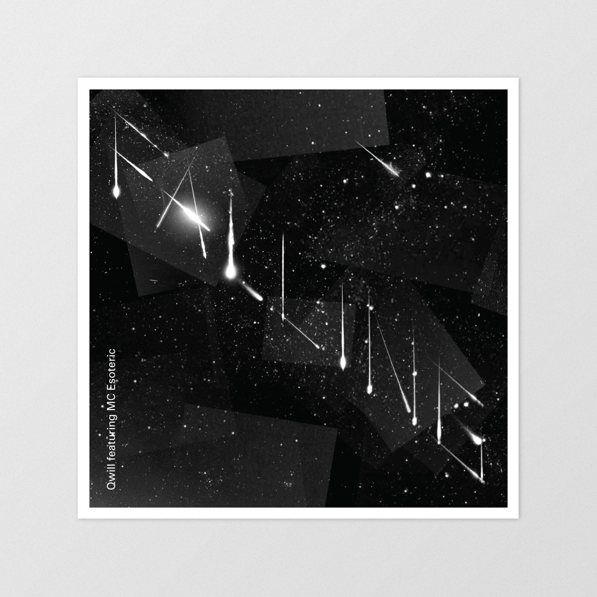
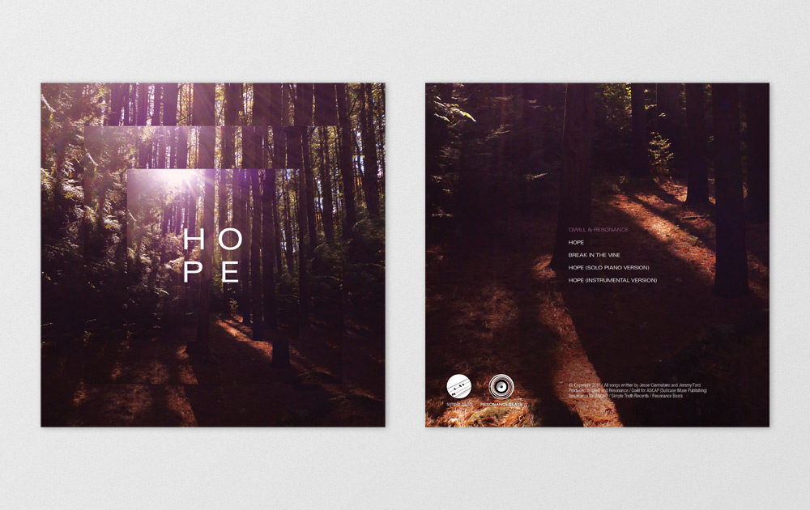
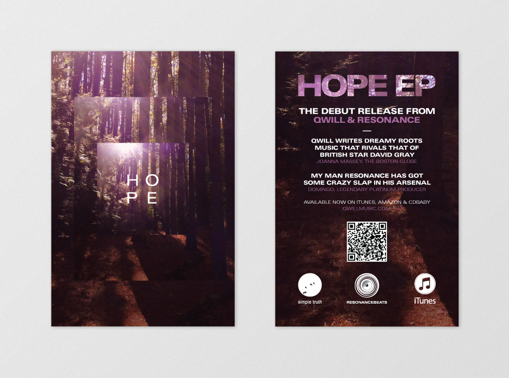
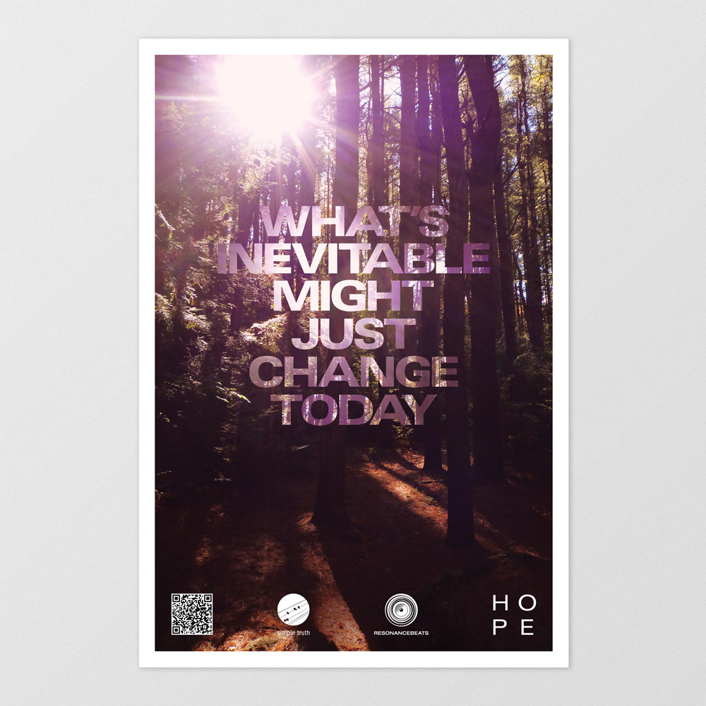
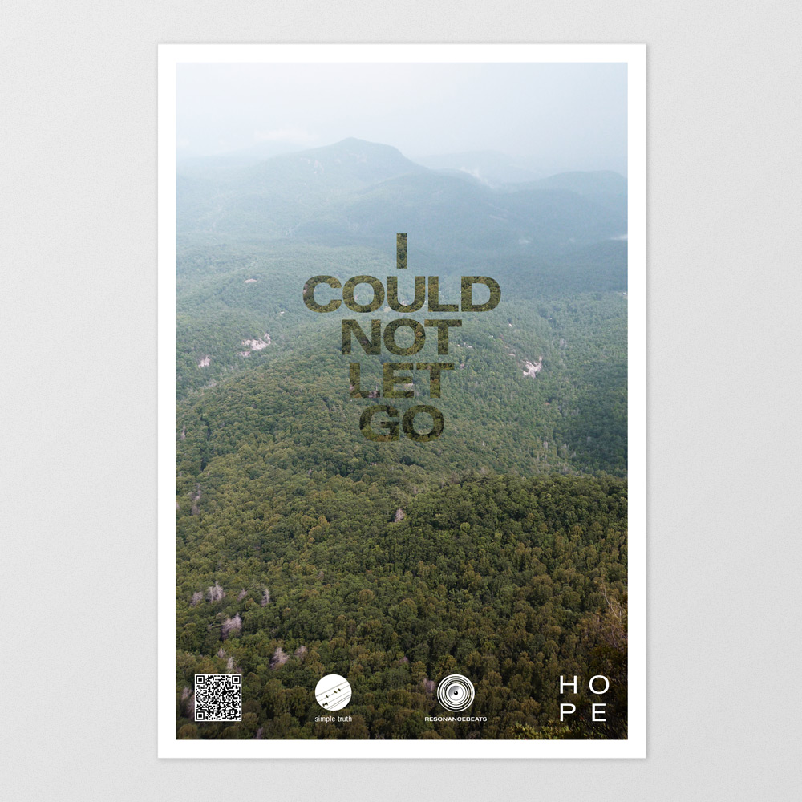
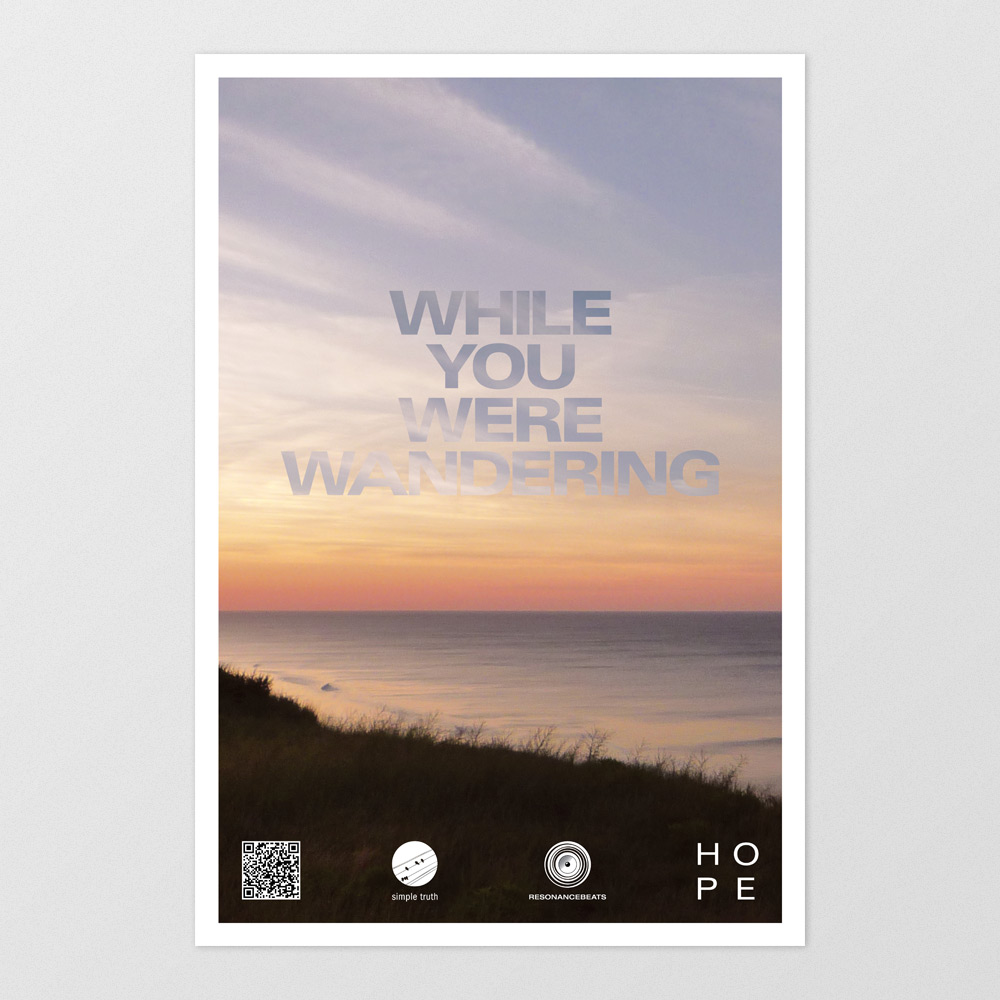

Graphic design Music production
Album artwork and print collateral for various releases from Qwill, a Boston-based singer, songwriter, producer and multi-instrumentalist. Performing solo and with the accompaniment of a band, his music draws influences of indie rock, roots, electronic and soul.
The Boston Globe wrote, "Qwill writes dreamy roots music that rivals that of British star David Gray," and Dusty Groove America stated he has a "Wonderful voice filled with rich tones and inflections that give him a sound that's unlike anyone else we've ever heard."





